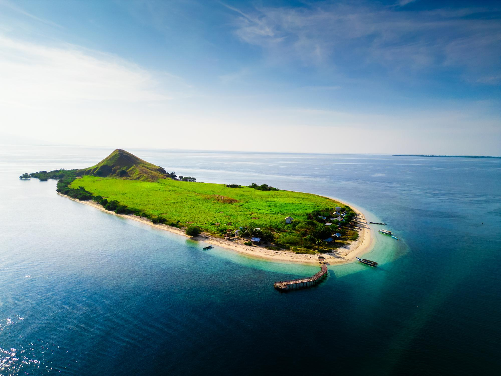
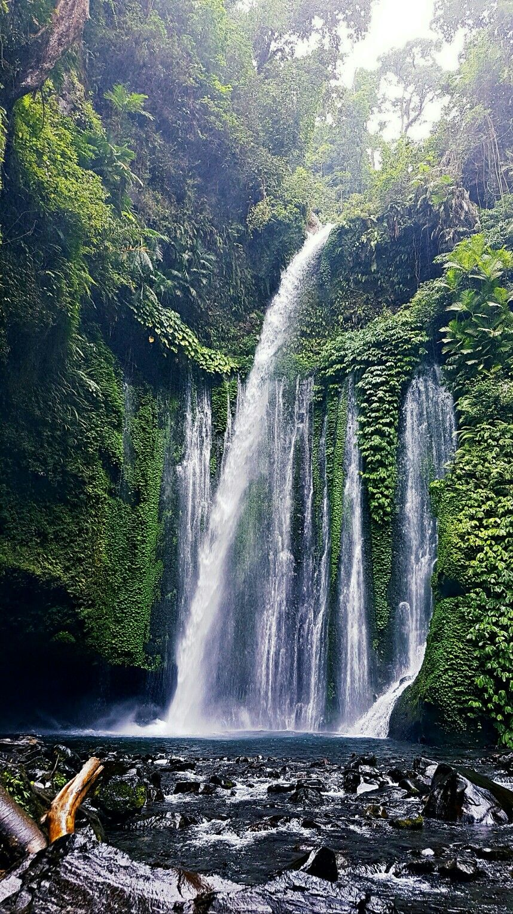
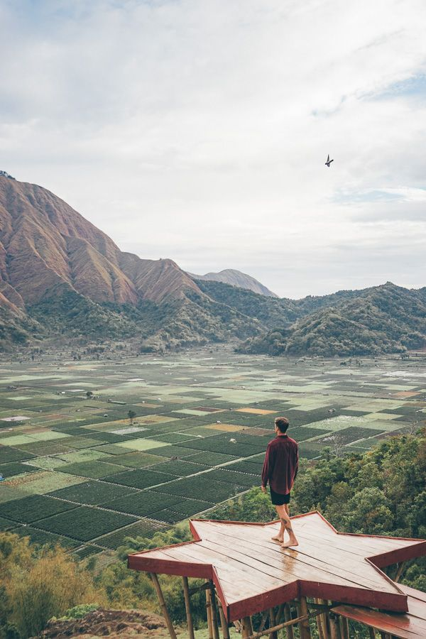
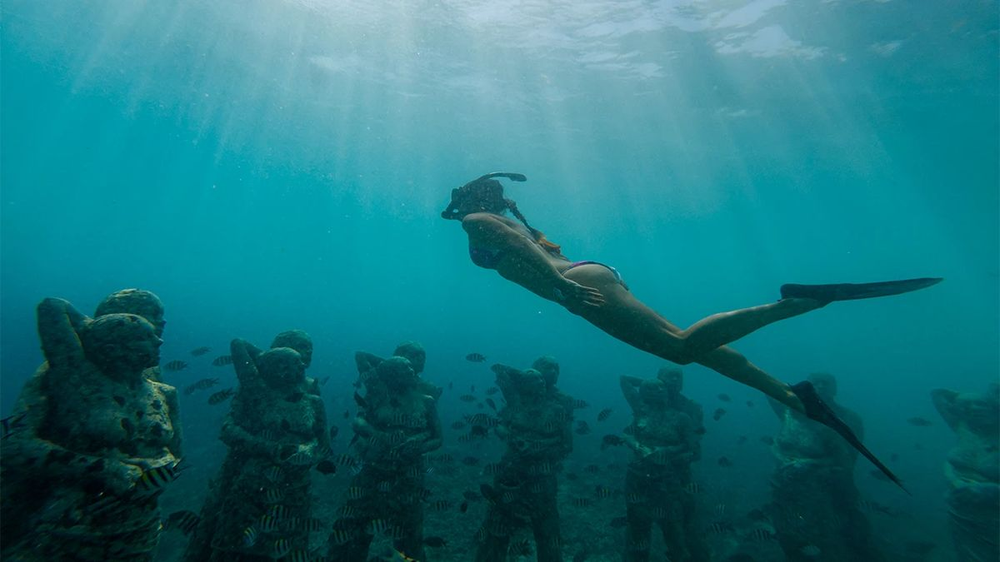

Mulai Petualanganmu
Temukan pesona tersembunyi dari NTB
Rencanakan perjalanan sempurnamu dengan saran ahli. Dapatkan tips perjalanan, informasi destinasi, dan inspirasi dari wisatawan lokal.

Rencanakan perjalanan sempurnamu dengan saran ahli. Dapatkan tips perjalanan, informasi destinasi, dan inspirasi dari wisatawan lokal.
Pesona NTB lahir dari kecintaan kami terhadap keindahan alam Nusa Tenggara Barat. Disini dapat mempermudah wisatawan lokal maupun mancanegara dalam menemukan destinasi terbaik di NTB khusunya di pulau Lombok, pulau Sumbawa, dan sekitarnya.
Menjadi platform rekomendasi wisata NTB terpercaya yang membantu traveler merencanakan perjalanan dengan mudah, lengkap dengan informasi akurat dan akses langsung ke maps yang ingin dituju.

Temukan tempat-tempat terindah di Nusa Tenggara Barat

Pasir putih dengan ombak tenang dan sunset spektakuler.

Air segar dari gunung, trek seru, dan pemandangan Rinjani.

Spot favorit untuk menyaksikan matahari terbit di atas perbukitan.

Snorkeling kelas dunia, pasir putih, dan kehidupan malam.